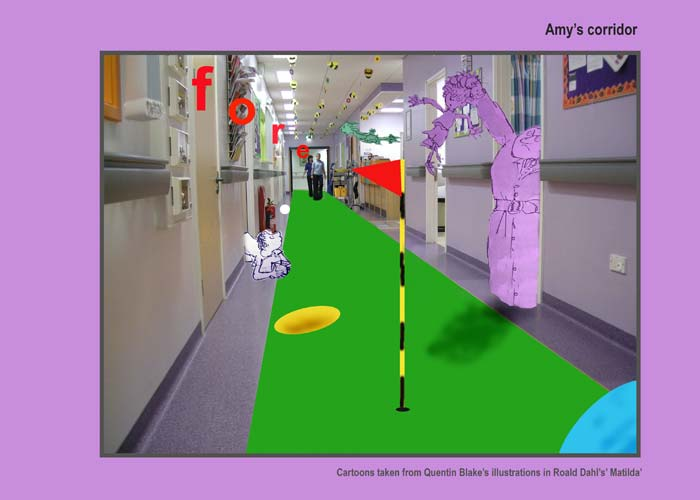

	<div id="oneCol" class="row">
    <div class="large-12 columns">
        <div class="medium-10 medium-offset-1 end columns">
        <h3>Transforming Spaces - project with Oxfordshire  Hospital School, John Radcliffe Hospital (2008-2009)</h3>
<p>I was commissioned to work with young people in the hospital. Using  their vivid imaginations, they were encouraged to transform familiar hospital  areas into personal, magical spaces using digital cameras and software.  Together we created an interactive book aimed at patients between 3 and 10  years. The images here show some of their pages.</p>
		</div>
			<div class="center">
        <a href="hospital002.html" title="View next Transforming Spaces photograph"></a>


<span class="links"><a href="hospital002.html">next</a></span>
        </div>
     </div>
</div>


